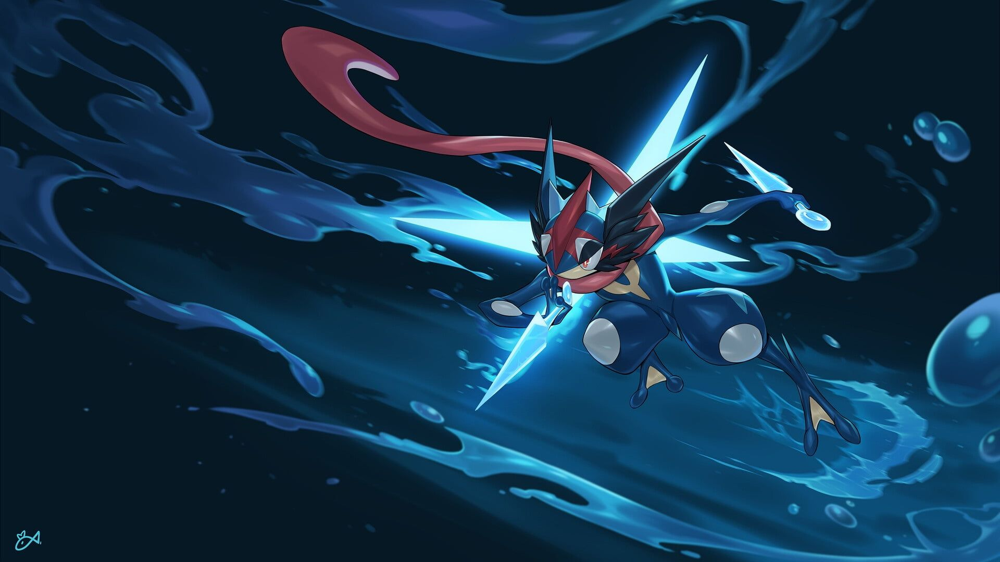
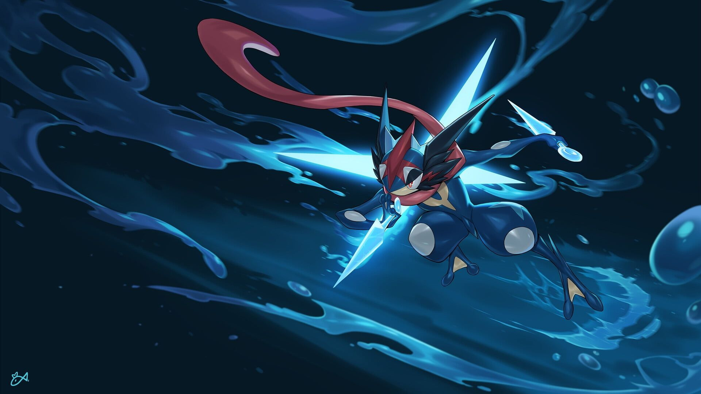

A Origem de Pokémon
A franquia Pokémon foi criada por Satoshi Tajiri e Ken Sugimori, e teve seu início com os jogos Pokémon Red e Green para o Game Boy, lançados em 1996 no Japão.
O conceito dos jogos foi inspirado na infância de Tajiri, onde ele gostava de colecionar insetos. Ele queria criar uma experiência semelhante para as novas gerações, mas usando criaturas fictícias chamadas Pokémon.
Desde então, a franquia Pokémon cresceu para incluir uma variedade de jogos, séries de televisão, filmes, jogos de cartas colecionáveis e muito mais, tornando-se uma das marcas de entretenimento mais reconhecidas em todo o mundo.
Principais Jogos de Pokémon
- Pokémon Red e Green (1996)
- Pokémon Gold e Silver (1999)
- Pokémon Ruby e Sapphire (2002)
- Pokémon Diamond e Pearl (2006)
- Pokémon Black e White (2010)
- Pokémon X e Y (2013)
- Pokémon Sun e Moon (2016)
- Pokémon Sword e Shield (2019)
Estes são apenas alguns dos muitos jogos lançados ao longo dos anos, cada um introduzindo novos Pokémon, regiões para explorar e mecânicas de jogabilidade.
Séries de TV e Filmes
Além dos jogos, Pokémon também se tornou uma franquia de sucesso na televisão e no cinema. A série animada de Pokémon estreou em 1997 e ainda está em produção, contando as aventuras do treinador de Pokémon Ash Ketchum e seu parceiro Pikachu.

Além disso, a franquia lançou vários filmes de animação, começando com "Pokémon: O Filme - Mewtwo Contra-Ataca" em 1998, que se tornou um sucesso de bilheteria.
Jogos de Cartas Colecionáveis e Outros Produtos
Pokémon também é conhecido por sua linha de jogos de cartas colecionáveis, que foi lançada em 1996 e continua popular até hoje. Além disso, há uma ampla gama de outros produtos Pokémon, incluindo brinquedos, roupas, acessórios e muito mais.
 

A The Pokémon Company International é responsável pela marca Pokémon fora do Japão e é uma subsidiária da Nintendo, que detém parte da propriedade da franquia Pokémon.